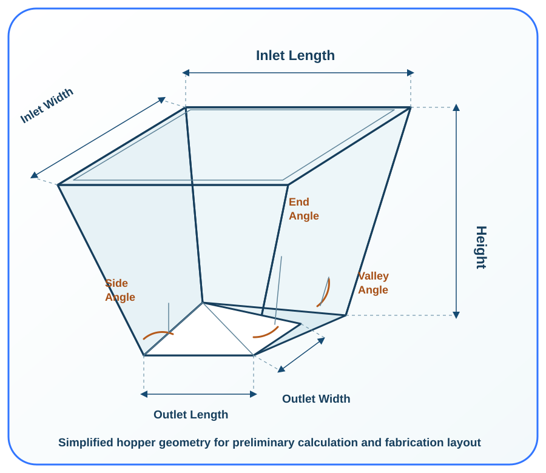

Half differences
ΔL = (Lt − Lb) / 2
ΔW = (Wt − Wb) / 2
These are the horizontal offsets between the centre lines of the top and outlet rectangles.
 IndustrialCalculation HubSearch topics, tools, articles...⌕
IndustrialCalculation HubSearch topics, tools, articles...⌕Existing engineering calculator
Calculate a rectangular hopper’s valley angle or height, along with the two plate angles, surface area and internal volume.

Choose whether to calculate valley angle from hopper height or height from valley angle. Enter all opening dimensions in millimetres.
Engineering knowledge
A rectangular hopper transitions from a larger top opening to a smaller outlet using four inclined fabricated plates. The valley angle describes the inclination along the line where two adjacent plates meet. It is useful for preliminary hopper layouts, plate-development checks, material estimates and early equipment sizing.
Hopper geometry alone does not establish reliable bulk-solid flow. Material properties, wall friction, outlet size, discharge arrangement and structural loads require separate assessment.
Explore Material Handling and Bulk Solids →ΔL = (Lt − Lb) / 2
ΔW = (Wt − Wb) / 2
These are the horizontal offsets between the centre lines of the top and outlet rectangles.
θᵥ = tan⁻¹[H / √(ΔL² + ΔW²)]
When valley angle is entered instead, the existing calculator rearranges this relation to determine H.
V = H / 3 [A₁ + A₂ + √(A₁A₂)]
A₁ and A₂ are the top and outlet plan areas, calculated in consistent metric units.
For a 3,000 mm by 2,500 mm top opening, a centred 600 mm by 600 mm outlet and a 2,200 mm hopper height, the existing calculator reports the two plate angles, valley angle, total plate surface area and internal frustum volume. These values can support a preliminary layout before detailed flow and structural design.
A plate angle is measured along one hopper wall. The valley angle is measured along the seam where two adjacent inclined plates meet, so it accounts for the offsets in both directions.
Yes. Enter equal top length and width, and equal outlet length and width, for a square hopper. The calculator also accepts rectangular openings.
No. Geometry by itself cannot predict reliable flow. Bulk material testing and a hopper-flow assessment are required for a design decision.
It provides a preliminary main-plate area. Add allowances and account for thickness, density, cutouts, stiffeners, welds and lining separately before procurement or fabrication.
This is an original educational summary. Verify material data and project requirements for actual work.